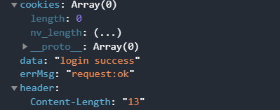

LoginApp
从这里开始，制作一个可以实现登录功能的微信小程序
一、前端设置
1.在微信开发者工具中创建一个新项目，命名为LoginApp，
新项目中没有任何文件，并且报出如上错误，接下来创建app.json
2.app.json中以字典的形式加入三个变量，pages，window，tabBar
- pages：用来说明小程序都是由哪些页面组成的，列表中的值为对应页面的存储路径，框架会自动去该目录下找需要的四个文件
- window：用与设置小程序的状态栏、导航条、标题、窗口背景色
- tabbar：用来设置底部tab栏,list参数用于修改tab的属性
3.找到login.wxml文件，并对登录页面进行设置

这里用到了数据绑定的知识，前端wxml页面中用两个大括号框起来的变量，可以与后端js中的数据双向绑定，绑定对象如下
4.找到login.js文件，完成绑定的两个输入事件
这里有两个注意事项：
- 想要通过数据绑定改变前后端数据，只能通过在js方法中使用this.setData()函数，同时函数的参数应当为字典
- 在其他方法中访问data中的数据值，通过this.data.xxxx
- 调用wx.request接口,访问服务器
二、后端服务器设置
目前的想法是接收wx.request接口传入的用户名，密码，验证码等参数，与数据库中的用户名和密码对照，如果相同则完成登录
1.环境配置
1.1 安装虚拟环境
1 | |
1.2 激活虚拟环境
1 | |
1.3 安装django,创建项目
1 | |
- 此时安装的django仅在虚拟环境中可用
1.4 打开django服务器
1 | |
- 可以在最后加上数字作为选择的端口
- 此时输入http://127.0.0.1：80/就可以访问django创建的服务器，这类似一个本地服务器，只能处理本地服务器发出的请求
2.数据库创建
2.1 在命令行中执行如下命令，创建数据库
1 | |
这会在配置文件中生成一个数据库文件
2.2 定义数据库表
- 首先创建一个应用目录，在里面存放项目需要的公共的表的定义
1 | |
- models.py是存放数据库表的定义的，加入如下内容
- django.db.models里面有各种Filed对象，对应的是不同类型的字段
2.3 创建数据库表
- 在INSTALLED_APPS中加入如下声明，让django完成应用配置
1 | |
- 在根目录中执行命令
1 | |
此时真正完成了数据库表创建
- 需要注意的点是，每次对models.py库表完成定义后，都要执行上方的命令行命令
2.4 Admin管理数据
- 这里我们使用的是SQlite数据库，这在简单的项目中具有简便，简单操作的特性
- 打开SQlite，可以看到先前创建的数据库表

django提供着一个管理员操作界面可以修改自己定义的model表数据
首先，创建一个超级管理员账号，在根目录中执行如下命令
1
python manage.py createsuperuser
然后修改应用里面的管理员配置文件common/admin.py
1
from django.contrib import adminfrom .models import Customeradmin.site.register(Customer)此时访问http://127.0.0.1/admin/即可访问管理员操作界面，向其中加入两个用户

3.实现登录
当客户端发起http请求时，浏览器通过url在配置文件中找对应的文件，并执行相应的方法
3.1 设置url
新建一个名为customer的应用程序，并在目录下创建urls.py文件，并存放访问url后执行的方法
1
2
3
4
5from django.urls import path
from customer import login
urlpatterns = [
path('customers', login.customer_login),
]
在主目录的urls.py中进行如下设置
1
2
3
4
5
6
7from django.contrib import admin
from django.urls import path
from django.urls import include
urlpatterns = [
path('admin/', admin.site.urls),
path('login/', include('customer.urls')),
]上述用到的include方法，会让浏览器在发现有login时，进入到customer.urls文件中查找
3.2 实现登录逻辑
这里首先通过自己的试验，得到了从前端传向后端的参数存放在http请求的请求体中，可以通过request.body获取数据
request.body中的数据以字典的形式存放
3.2.1 数据处理
通过request.body获得的数据为json格式，而json格式的数据在python看来，是字符串类型的变量，开始时没有注意到这个问题，所以在这里困了很久，会报错很多。这里选择的解决办法是：
- 通过json.loads方法将json字符串转化为python字典，并且统一存入request的params属性中，访问params属性中的参数通过request.params[‘’]访问，就可以得到从客户端传入的json数据
- json.loads方法需要import json包
- 获得了从客户端传入的数据，下一步就需要与数据库中的数据比较，可以通过下面的方法访问数据库中的数据
1 | |
数据库还支持遍历所有表中数据来查找满足条件的数据，即通过过滤条件查询数据库内容，这里可以通过https://www.byhy.net/tut/webdev/django/05/查看这部分内容，
3.2.2 数据返回
wx.request接口要求返回的数据为JSON格式，所以需要把python对象转换成JSON数据，json.dumps方法可以将python对象转化为JSON等效项。
返回数据的方法就我所看到的有两种方式，一种是使用HttpResponse返回，一种是使用JsonResponse返回，这两种返回数据的方法的区别目前我还没有搞明白，这里选择的使用httpResponse。使用方法如下
1
2
3
4from django.http import HttpResponse
return HttpResponse('password is incorrect')
# data为一个python对象数据类型
return HttpResponse(json.dumps(data))
这样后端就完成了他的功能，此时在登录界面输入手机号、密码就可以进行前后端联系，可以看到data参数即为我们后端的返回值
下方附上后端的全部代码
1 | |